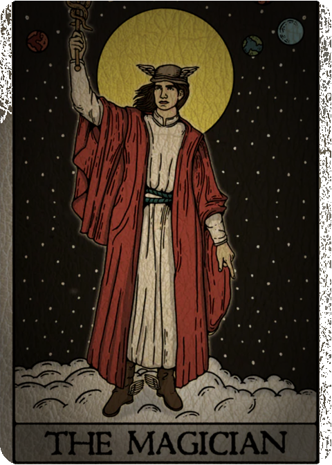
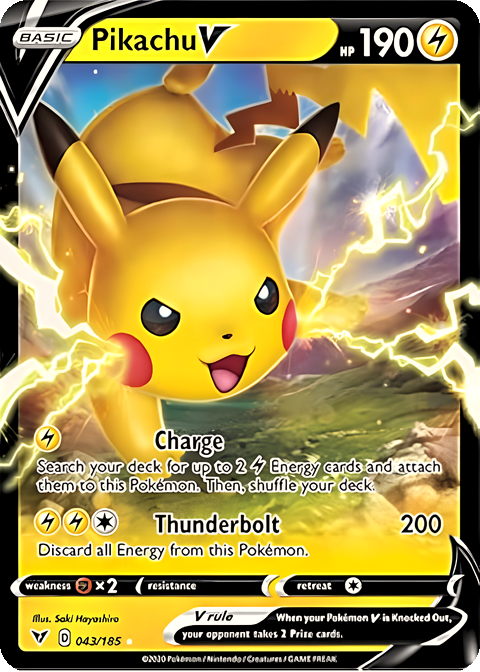
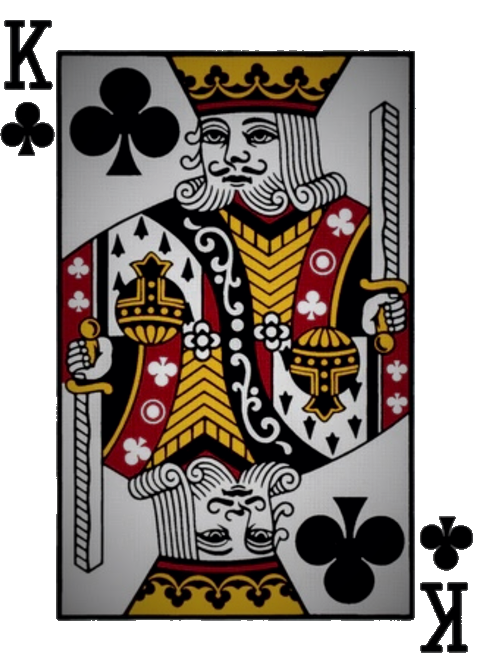
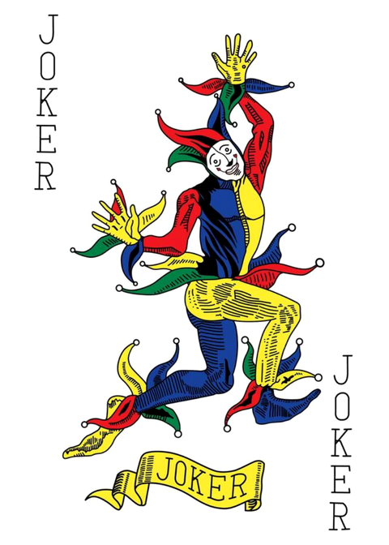
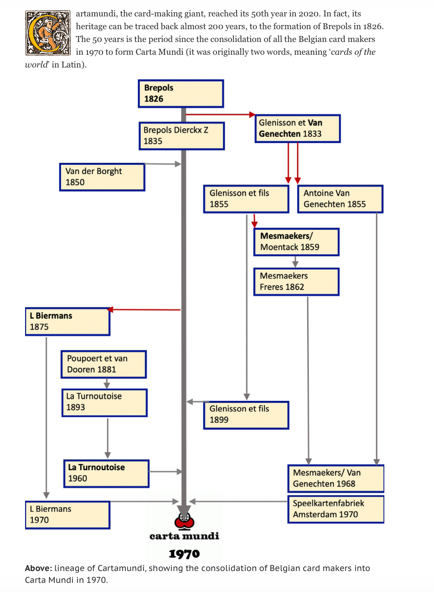
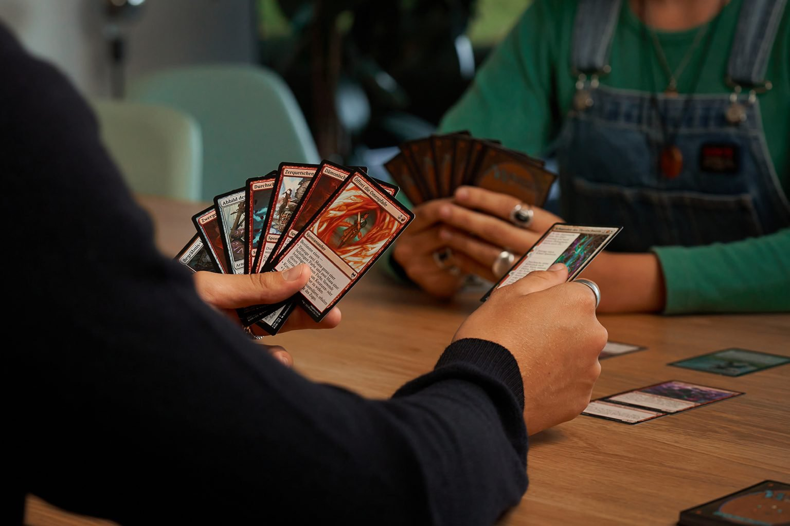
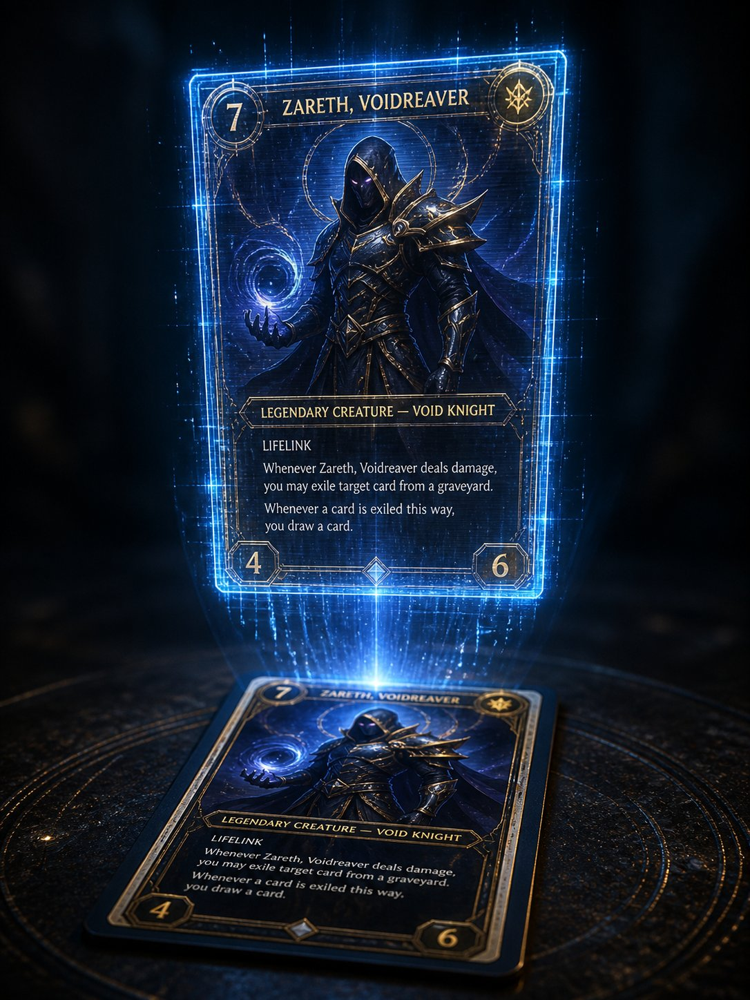

You've held their products
a thousand times
but you never
knew their name
01 — Ontstaan
Cartamundi werd opgericht op 27 juni 1970 als een joint venture tussen drie Turnhoutse drukkerijen:
De drie bedrijven bundelden hun speelkaartenafdelingen om samen sterker te staan op de Europese markt.
Turnhout, provincie Antwerpen — historisch bekend als de "Stad van de Speelkaarten". Straten dragen namen als Hartenstraat en Jokerstraat, en de stad heeft een speelkaartenmuseum.
Belgische kaartmakers zijn al actief sinds de 14e eeuw. In de 19e eeuw werd Turnhout het Europees epicentrum van de kaartindustrie.
Huidig adres: Turnovatoren 14 bus 1, Turnhout, België
Officieel opgericht: 27 juni 1970.
De roots gaan echter terug tot 1765 via de voorlopers Brepols, Van Genechten en Biermans — meer dan 260 jaar ervaring in kaartproductie.
Cartamundi claimt actief: "onze drukpersen draaien sinds 1765" — een krachtig marketingverhaal dat hun historische legitimiteit onderstreept.
Het produceren en verkopen van speelkaarten. De naam "Cartamundi" is Latijn voor "kaarten voor de wereld" — oorspronkelijk geschreven als twee woorden: "Carta Mundi".
De fusie in 1970 was een strategische zet: door krachten te bundelen konden de drie bedrijven efficiënter produceren en beter concurreren op een internationale markt die in de late jaren '60 steeds meer onder druk stond door massaproductietechnieken.

02 — Groei
Klik op een jaar om de mijlpaal te ontdekken
Eerste speelkaarten gedrukt in Turnhout door de voorlopers van Cartamundi. Brepols begint in 1826, Van Genechten rond 1840 — maar de druktraditie in de regio gaat terug tot 1765.
Op 27 juni 1970 bundelen Brepols, Van Genechten en Biermans hun krachten. Carta Mundi — "kaarten voor de wereld" — is geboren als joint venture in Turnhout.
Oprichting van Cartamundi France SARL nabij Parijs — de eerste buitenlandse vestiging. Een jaar later: Cartamundi Inc. in Kentucky, VS (1994) en een productiefaciliteit in Kingsport, Tennessee (1996).
Overname van de Zwitserse AGMüller — de eerste acquisitie in een lange reeks. Ook oprichting van Cartamundi Nordic. Begin van de systematische groeistrategie via overnames.
Overname van ASS Spielkartenfabrik Altenburg van Ravensburger. In 2000 was al Altenburger und Stralsunder Spielkarten overgenomen. Sterke positie in de Duitstalige markt.
50% belang in Copag Da Amazonia (Brazilië) — entree in Latijns-Amerika. Eerder ook overname van Games & Print Services (VK, 2003).
50% belang in Parksons Games & Sports (India) — de grootste kaartmaker van India. Joint venture in Tokyo. Introductie van lasersnijmachines voor precisieproductie.
Overname van de France Cartes groep (2014), gevolgd door twee Hasbro-fabrieken in 2015: Waterford (Ierland) en East Longmeadow (Massachusetts, VS).
Na de Hasbro-overnames produceert Cartamundi Monopoly, Uno, Trivial Pursuit, Guess Who en Risk. Van speelkaartenmaker naar totaaloplosser voor de gehele mondiale spelindustrie.
Overname van The United States Playing Card Company van Newell Brands. Cartamundi verwerft: Bicycle, Bee, Tally-Ho, KEM, Aviator, Hoyle, Fournier en meer.
Sluiting van de Hasbro-fabriek in Waterford, Ierland (235 banen). Tegelijk: partnerschap met de Kings League voor hybride trading cards — eerste stap naar het Hro-platform.
Uitbreiding productiefaciliteit Turnhout (+50 nieuwe banen) door groeiende vraag naar verzamelkaarten. Opening nieuwe hyperperformante site in Altenburg, Duitsland.
USPCC bereikt mijlpaal van 100 miljoen geproduceerde decks. Viering 140e verjaardag Bicycle met Cardtopia 2025 (14 juni). Heruitgave historische Louis XV kaarten door Maison Grimaud.
03 — Het Bedrijf Nu
Cartamundi is de wereldleider in "play solutions" — ze ontwerpen, produceren en distribueren speelkaarten, kaartspellen, bordspellen, trading cards, puzzels en promotionele speloplossingen.
Het bedrijf opereert als fabrikant (manufacturing partner voor Hasbro, Mattel, The Pokémon Company) én als merkhouder (eigen portfolio: Bicycle, Copag, KEM en meer).
Missie: "Sharing the magic of playing together" — de magie van samen spelen delen.
Visie: "Live different, Play different" — de wereld een betere plek maken door spel. Spelen verbindt mensen, vermindert stress en bevordert leren.
Waarden: Familiebedrijf met focus op innovatie, kwaliteit, duurzaamheid en gemeenschap. Medewerkers noemen zichzelf trots "Cartamundians".
Cartamundi is een privaat familiebedrijf en publiceert geen gedetailleerde financiële cijfers. Geschatte IT-uitgaven: $73,6 miljoen/jaar. Marktaandeel VS: ~3,1%.
Officiële Belgische cijfers: NBB Balanscentrale — ondernemingsnummer BE 0435.618.757.
13 productiefaciliteiten: Turnhout (HQ), Canvey Island (VK), Altenburg (DE), Saint-Max (FR), Kraków (PL), Mumbai (IN), Sōka (JP), Dallas (TX), East Longmeadow (MA), Erlanger (KY), Vitoria-Gasteiz (ES), Copag (BR), Mexico (TCG).
Verkoopkantoren in 20+ landen op alle continenten. 6 designcentra, 1 digitale studio en 1 globaal R&D-centrum.
Eigen merken: Bicycle (wereldwijd bestseller), Bee (casino), Copag (premium plastic), KEM (acetaat), Fournier (ES), ASS Altenburger (DE), Grimaud (FR), Tally-Ho, Aviator, Hoyle, Eagle 601 (Azië).
Productie voor derden: Monopoly, Uno, Magic: The Gathering, Pokémon TCG, Trivial Pursuit, Guess Who, Risk — voor Hasbro, Mattel en Wizards of the Coast.
Diensten: Design, verpakking, promotionele kaarten en digitale producten via het Hro-platform.
B2B: Primaire focus. Cartamundi levert aan speelgoedbedrijven (Hasbro, Mattel), retailers en casino's wereldwijd.
B2C: Via eigen merkwebsites (bicyclecards.com, copag.com.br), Amazon en internationale retailers.
Custom / promotioneel: Directe verkoop aan bedrijven voor gepersonaliseerde speelkaarten en promotiecampagnes.
Website: cartamundi.com (corporate) + aparte sites per merk.
Social media: LinkedIn (corporate, employer branding), Facebook en Instagram (merkspecifiek via Bicycle, Copag).
Events & partnerships: Cardtopia (jaarlijks Bicycle-evenement), Hro DC Comics, Kings League. Sponsoring Vlerick Alumni Gaming & Esports Club.
Cartamundi publiceert een jaarlijks Good Neighbor Report met 4 pijlers:
Doelen voor 2025 (kort) en 2030 (middellange termijn) per pijler geformuleerd.
2024: Uitbreiding productiefaciliteit Turnhout (+50 banen). Opening hyperperformante site in Altenburg, Duitsland.
2025: USPCC bereikt 100 miljoen geproduceerde decks. Cardtopia 2025 (14 juni) — viering 140e verjaardag Bicycle. Heruitgave historische Louis XV kaarten door Maison Grimaud.
2026: Jobdag Turnhout (14 maart) — Cartamundi zoekt 150 nieuwe medewerkers. Bewijs van aanhoudende groei.

04 — Toekomst
Cartamundi investeert sterk in de convergentie van fysieke kaarten en digitale ervaringen. Het Hro-platform combineert fysieke verzamelkaarten met digitale versies — gelanceerd met DC Comics/Warner Bros. en de Kings League.
CEO Stefaan Merckx: "Cartamundi is committed to providing consumers with unprecedented experiences and innovative ways to connect and play."
Uitbreiding Turnhout (+50 banen, 2024), nieuwe fabriek Altenburg (2024), en werving van 150 nieuwe werknemers in 2026 wijzen op aanhoudende sterke groei.
Aandrijver: stijgende mondiale vraag naar trading cards (Pokémon TCG, Magic: The Gathering).
Investeringen in lasersnijmachines (sinds 2010), digitale druktechnieken voor limited editions, en plastic coatings voor duurzamere kaarten.
De nieuwe fabriek in Altenburg wordt omschreven als "hyperperformant" — gericht op maximale efficiëntie en capaciteit voor de groeiende trading card markt.
Via het Good Neighbor Report formuleert Cartamundi concrete KPI's per pijler voor 2030:
Cartamundi positioneert zich als een entertainment-ecosysteem in plaats van enkel fabrikant. Partnerships met Kings League (voetbal + gaming), Warner Bros. (DC Comics) en een eigen digitale studio.
Fysieke producten worden het startpunt voor bredere digitale community-ervaringen — spelen zonder grenzen tussen fysiek en digitaal.
